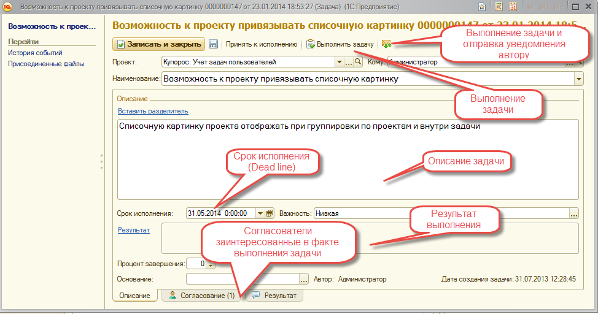
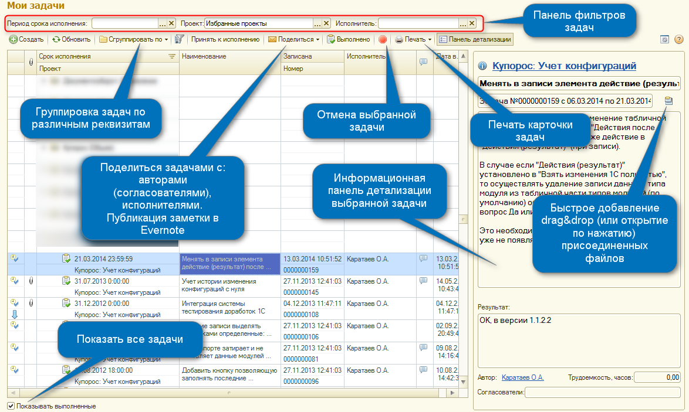
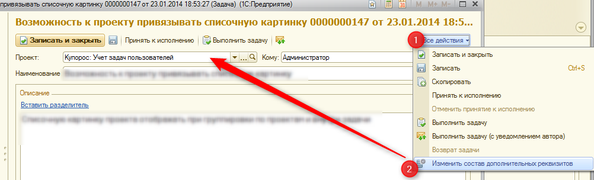

Задачи пользователя используются для фиксации в системе рабочих поручений либо персональных заданий пользователем программы (автором) и передачи ее для исполнения другому пользователю программы (исполнителю). В задаче указывается срок исполнения и приводится ее описание, выбираются согласователи.
Инициатором задачи может выступать пользователь, а в определенных случаях, задача может быть создана системой автоматически, руководствуясь принятыми алгоритмами автоматической постановки задач.
Для возможности уведомления пользователей вручную по электронной почте о выполненных задачах используется команда в списке задач подменю: Поделиться . Все новые или измененные задачи автоматически отправляются по электронной почте на исполнителя по регламентному заданию Уведомление исполнителей о новых задачах (по умолчанию: 1 раз, ежедневно в 8:00)
К задаче можно присоединять и осуществлять версионирование файлов.
Любая задача может быть: принята к исполнению (отменена от принятия исполнения), выполнена (возвращена к выполнению), отменена.
Принципы работы с задачами
1. Пользователь создает задачу и формирует описательную часть, указывает необходимый срок исполнения и предполагаемого исполнителя. Пользователь задач не имеет возможности указания определенного проекта, т.к. его компетенции не достаточно для выявления точного формата проекта.
2. После записи, задача без проекта попадает в неразобранные. Неразобранные задачи регулярно отслеживаются ответственными за контроль задач пользователями.
3. Исполнитель получает новую задачу (уведомления по новым задачам приходят автоматически на электронную почту). В случае если исполнитель не верный, то начальный исполнитель меняет реквизит на другого исполнителя. Дополнительно исполнитель указывает согласователей задачи, помимо автора. Согласователи необходимы для возможности расширения списка зависимых от задачи пользователей, а также в случае создания задачи самим исполнителем.
4. При начале анализа задачи, исполнитель может запросить дополнительную информацию для начала работ по задаче. Указывается перечень недостающих материалов в поле ввода "Результат" и осуществляется отправка уведомления автору и согласователям задачи (подменю списка задач Уведомить).
5. Регулировкой старта начала работы с задачей является команда "Принять к исполнению".
6. Регулировка процента завершения задачи осуществляется с помощью поля ввода "Процент завершения".
7. После окончания работ с задачей описывается результат задачи в поле ввода "Результат" и осуществляется отправка уведомления автору и согласователям задачи. Задача выполняется по команде Выполнить задачу .
8. Автор задачи при входе в свои задачи получает форму оценки списка выполненных задач. В данной форме автору (или согласователю) необходимо выставить оценки выполнения задач и подтвердить оценки. По данным оценкам команда ИТ-специалистов можно проводить анализ качества выполнения задач.
9. Для возможности возврата задачи после выполнения или отмены необходимо использовать кнопку "Возврат задачи" в подменю "Все действия".
Рабочая форма задачи

Форма списка - Мои задачи

Настройка дополнительных реквизитов задач по проекту
Для каждого проекта можно задавать необходимый набор дополнительных реквизитов. В форме задачи нажать "Все действия" - > "Изменить состав дополнительных реквизитов".

Работа с избранными проектами
Пользователь может использовать для отбора только избранные им проекты, при выборе предопределенного проекта - "Избранные проекты". Настройки избранных проектов задаются в "Мои настройки" - закладка "Работа с задачами" - команда "Настроить список моих избранных проектов" .